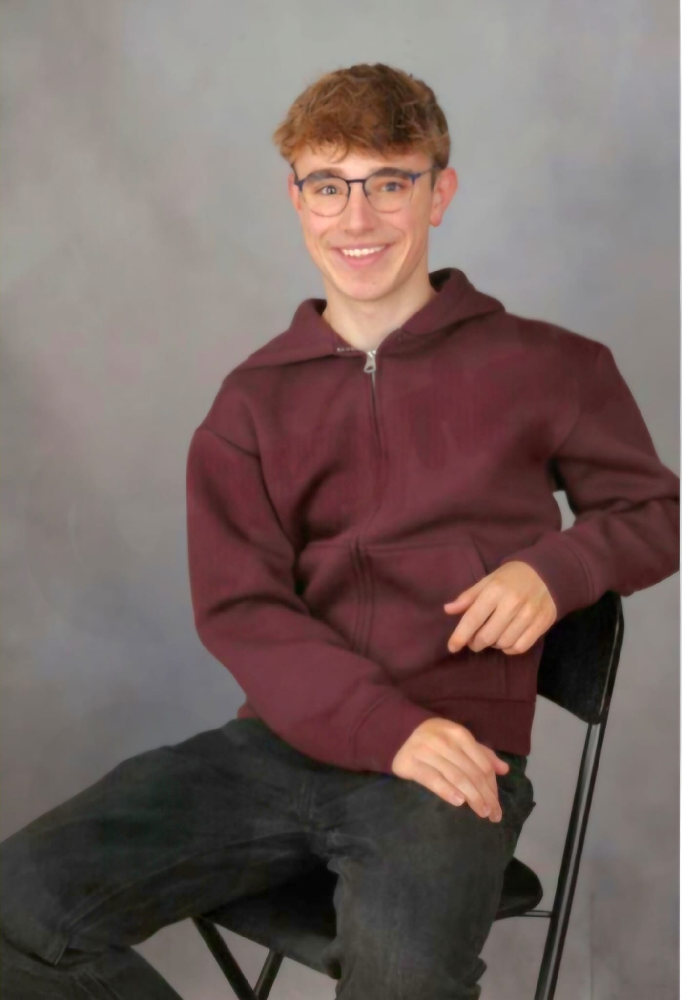
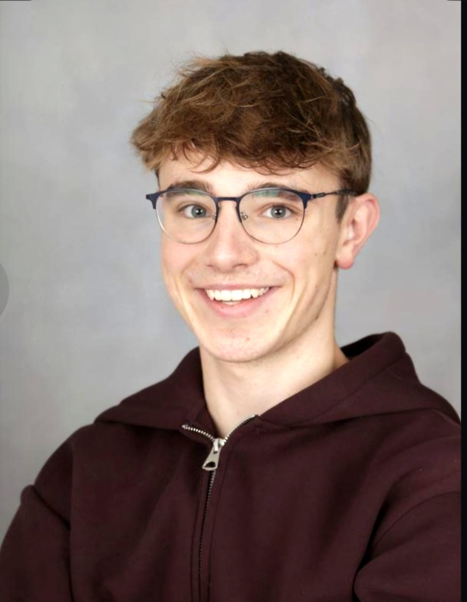

Die Menschen hinter Erlebnis Egerland
Maximilian
Britz
18 Jahre · im Projektjahr 2026
Meine Aufgaben
- Zeitzeugengespräche
- Interviews
Meine Motivation
Warum ich dabei bin
Ich habe gerne am P-Seminar „Unterwegs im Egerland“ teilgenommen, da ich die Möglichkeit spannend fand, mich aktiv mit einer Region, ihrer Geschichte und ihren Besonderheiten auseinanderzusetzen. Besonders gefallen hat mir, dass ich nicht nur theoretisches Wissen sammeln, sondern auch eigene Erfahrungen machen und mich aktiv in die gemeinsame Arbeit einbringen konnte. Die Zusammenarbeit im Team, das Entdecken neuer Orte und die erfolgreiche Umsetzung unseres Projekts haben das Seminar für mich zu einer wertvollen und abwechslungsreichen Erfahrung gemacht.
